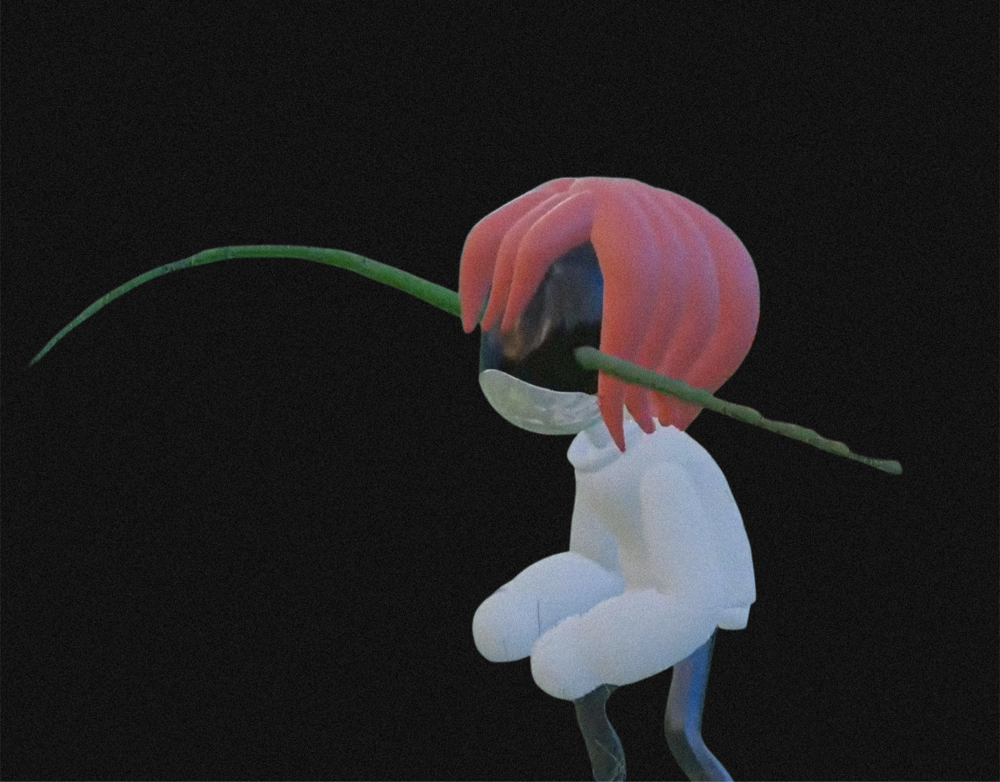

Fai woke to the soft clink of silverware and the low murmur of some kind of conversation.
She sat up in a chair at the head of a long mahogany table. Crystal chandeliers hung overhead, their light flickering through thick, living vines that crawled across the walls and ceiling like parasitic veins, They are pulsing faintly, glossy with something that wasn’t sap. The air smelled of old perfume, candle wax and something wet.
She was confused.She was not scared.
Around the table sat figures she did not recognize. Worker drones in formal attire, optics dim and polite. And humans. Or things that used to be human. Every one of them was a perfect black silhouette, featureless except for two glowing white eyes that stared without blinking. They raised glasses. They nodded. They smiled with mouths that weren’t there.

Fai tilted her head and falling across a face she could no longer see.
A tall mirror stood against the far wall, framed in tarnished gold. She stood, then walked over.
The reflection that looked back was the same as the others: a pure black silhouette with two bright white eyes. No labcoat. No jagged hair. No manic grin. Just shape and light.

Fai stared for half a second.
Then she raised both hands and made the most ridiculous faces the silhouette could manage. Poking her invisible cheeks, sticking out a tongue that wasn’t there, crossing her glowing eyes, waving jazz hands, even attempting a dramatic bow that nearly toppled her. She snorted.
She struck another pose then another. The reflection obeyed.
A soft, wet giggle drifted from the end of the table.
The voice that followed was familiar but every syllable glitched and tore, like audio played through a dying speaker underwater.

The chandeliers flickered.
The vines on the walls tightened with a wet creak.
Every pair of white eyes at the table turned toward her in perfect, simultaneous silence.
Fai’s silhouette froze mid-gesture.
The mirror cracked from the center outward in a spiderweb of black.
And then...▰▰ SIGNAL LOST ▰▰